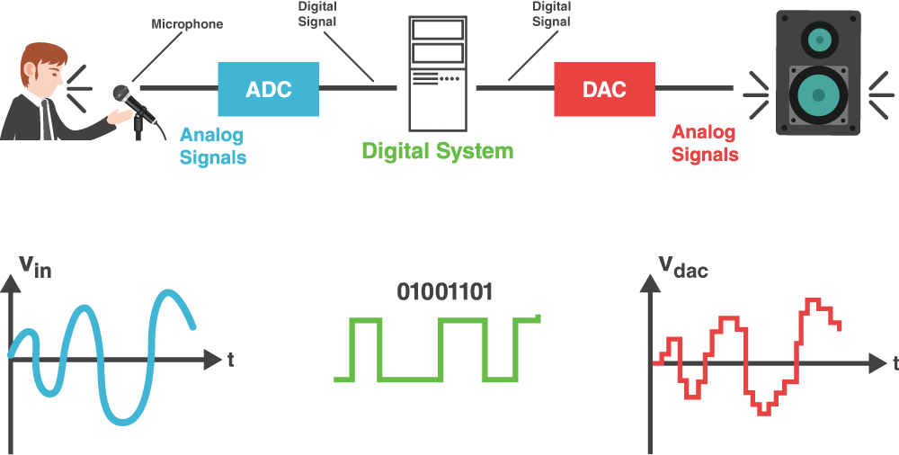

What Is DSP?
Digital Signal Processing, or DSP, is the process of manipulating different types of signals using mathematical programs and functions. It all begins with a real-world signal, such as sound, light, pressure, etc., being taken in by an Analog-to-Digital Converter (ADC). This converter reads the signal and turns it into a binary representation, 1's and 0's, so that it can be manipulated. Way Cool!
Once the signal is converted to digital data, it is stored in the Data Memory, on our system. We can create programs that tell our processor how to manipulate and alter it. These programs are stored in the Program Memory on our system. The Processor of our system takes the data from the data memory, the programs from the program memory, and alters the data according to the instructions of the programs. This is where our different effects programs/algorithms come in. We could amplify the data values with an overdrive algorithm, make a funky glitch sound with a bit-crusher algorithm, or change the pitch of the signal with a phaser algorithm. After the processor is done, it puts the newly altered data back into the Data Memory.
Many things can be done with the data after it's been processed, but for our purposes we'll be converting it back to an analog signal. This is done using the opposite of an ADC, a Digital-to-Analog Converter (DAC). Woo!
Below is a list of the terms from above that we'll frequently be using along with their definitions.
- ADC - Analog-To-Digital Converter that converts analog signals into digital data.
- Processor - Performs program operations on the digital data.
- Data Memory - A portion of the systems memory where the signal data is stored.
- Program Memory - A portion of the systems memory where the programs are stored.
- DAC - Digital-To-Analog Converter that converts the processed digital data back into an analog signal.

So now that we have a high-level understanding as to how the pedal will make changes to our signal. Let's go over how our pedal will fit into the whole chain of our guitar rig and what all our signal travels through.
Our chain consists of four major pieces.. The Guitar, The Pedal, The Amp, and The Speaker.
The Guitar
- The Signal is first created when the player strums the strings of the guitar. This strumming causes the strings to vibrate and make changes in their magnetic field.
- The changes in the magnetic field are detected by the pickups on the guitar. The pickups are custom designed magnets that generate an electrical signal when they detect changing magnetic fields.
- This newly created electrical signal is sent through a wire to the output jack of the guitar.
- The output jack then sends the signal through an instrument cable out to our next stop.
The Pedal
- The Pedal recieves the analog signal from the instrument cable.
- The Pedal then converts the analog signal to a digital signal, applies effect algorithms to it, and converts the new signal back into an analog format.
- The signal is then sent from The Pedal, through another instrument cable to its' next stop.
The Amp
- The Amp intakes the signal through an input jack.
- Depeding on the amp, the signal is sent through a series of vacuum tubes, or transistors, or both!
- These tubes/transistors amplify the voltage of the signal then send the signal along to the Speaker.
The Speaker or Cab
- The Speaker, recieves the amplified signal.
- This signal then powers a magnet attached to the speaker cone, moving it in and out varying distances according to the signal it's given.
- This movement creates vibrations in the air, or sound waves, that get pumped into your ears, creating beautiful sound for us to enjoy.